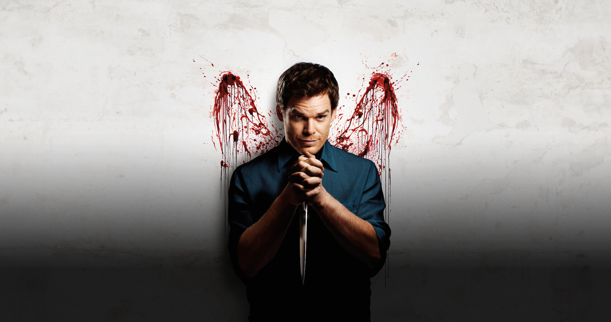

Dexter, uma serie que conta o dia a dia de Dexter Morgan, um especialista forence que trabalha no Departamento de Policia de Miami. Dexter vive uma vida dupla como um asasino em serie. Ele tem um código moral que o leva a matar apenas aqueles que sao culpados de crimes hediondos e escaparam da justiça. A serie explora temas como moralidade, justiça e natureza humana, enquanto dexter navega por sua vida oculta e tenta manter sua identidade oculta.
Dexter é um menino que presencia o assassinato brutal de sua mãe em frente a ele que o traumatiza profundamente. Ele é adotado por Harry Morgan, um policial que reconhece os sinais de psicopata em Dexter e decide treiná-lo para canalizar seus impulsos violentos de forma controlada com o código de Harry. Harry cria um código moral estrito, que inclui matar apenas aqueles que mereciam morrer como criminosos que escaparam da justiça. Dexter aprende a controlar seus impulsos e a viver uma vida dupla, como um analista de sangue forence durante o dia e um justiceiro à noite.
